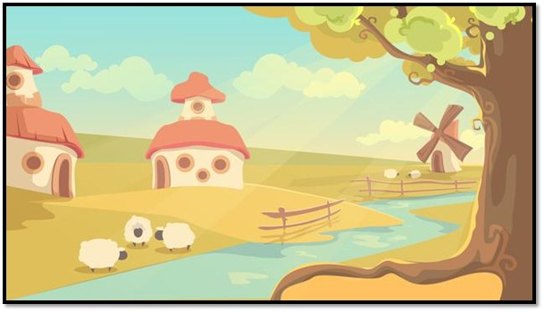

Al principio todo era caos
¿Conoces a alguien que le pone “peros” a todo? A continuación, encontrarás una lista de planes y de propuestas. Lo que debes hacer es negarte a todo usando la excusa más alocada que se ocurra. Usa palabras como: pero, mas, sin embargo, fuera, puesto que, porque, etc.
Por ejemplo:
• ¿Quieres ir a ver una película el fin de semana?
No te ofendas, sí quisiera ir, pero voy a ser coronado como príncipe de mi pueblo la próxima semana.
Lee el siguiente texto con mucha atención. Luego, contesta las preguntas.

El pueblo

Dicen que había un pueblo muy escondido, y muy, muy, muy lejos. Ni a la vista ni cerca, era un pueblo oculto y lejano, con terrenos llanos. En ese pueblo vivían Laura, Alejandro, Ana, Luis, Lucía e Isabel. No era el pueblo soñado, ya que estaba muy alejado, pero había muchos lugares especiales, como un bosque encantado, mas nunca habían entrado porque estaba encantado, sino que de él habían hablado en las lluviosas tardes largos ratos, soñando con algún día poder entrar y no dejar de soñar y viajar.
Un día, a uno de ellos se le ocurrió una idea: ¡Viajar al bosque encantado! Todos estuvieron de acuerdo, sin embargo, Isabel tuvo un traspié y se torció un pie. Al día siguiente, en vez de torcerse un pie, a Laura se le rompió una muela, y su abuela, que era dentista, se lo arregló, es decir, le colocó un empaste. Así que, al final, en vez de ir al bosque, se quedaron en casa y se tomaron un chocolate.
Aventuraentrelibros. El Pueblo. Recuperado de: http://aventurasentrelibros.blogspot.com/2015/03/cuento-con-conjunciones.html
Cuéntame...
hasta que un día el guerrero supo que
Son las palabras que se emplean para unir palabras u oraciones entre sí, de modo que sea posible construir mensajes completos. En otras palabras, las conjunciones son palabras de unión o de enlace.
Era un pueblo oculto y lejano
Revisa el texto anterior e intenta encontrar otras palabras que unan o enlacen palabras u oraciones, como en el ejemplo anterior. ¿Cuáles encontraste?
| Conjunciones coordinantes |
Conjunciones subordinantes |
Son las que empleamos para unir dos palabras u oraciones que tienen un mismo nivel de importancia dentro de la oración; es decir, aquellas que unen dos o más elementos que pueden ser intercambiados en la oración sin que se altere el sentido. Las más conocidas son: y, e, ni, o, u.
Por ejemplo:
Ayer compré un lápiz, un borrador y una regla.
|
Nos sirven para unir dos elementos, de los cuales uno depende del otro para tener sentido completo dentro de la oración, es decir, que no son independientes o no tienen un significado propio. Las más usadas son: que, cuando, donde, como, ya que, entre otras.
Por ejemplo:
Ayer compré un lápiz, un borrador y una regla.
|
Copulativas: Son conjunciones coordinantes que unen una frase con otra, formando grupos, en donde los elementos se suman (y, e, ni, que, no solo, tanto... como, así... como, igual... que, lo mismo... que, ni... ni, sino también, cuanto...).
Distributivas: Son conjunciones coordinantes que denotan la alternancia de opciones compatibles (ya... ya, bien... bien, unas... otras, uno... otro, tanto... como, sea... sea, siquiera... siquiera...).
Completivas: Son conjunciones subordinantes que introducen oraciones completas (que, como, así como, como si, sin que...).
Consecutivas: Son conjunciones subordinantes que introducen una oración en la que se muestra la consecuencia de algo que antes se dijo (tan, tanto... que, conque, así pues, luego, así que, de modo que, de manera que, de forma que, por lo tanto...).
Condicionales: Son conjunciones subordinantes que expresan condición o necesidad de que se verifique alguna circunstancia (si, como, si no, a menos que, en caso de que, siempre que, con tal de que, a condición de que, como...).
Disyuntivas: Son conjunciones coordinantes que denotan separación, diferencia o alternativa entre dos o más personas, cosas o ideas (o, u).
Adversativas: Son conjunciones coordinantes que denotan oposición o diferencia, entre la frase anterior y la que sigue (pero, mas, empero, sino, aunque, sin embargo, no obstante, antes, antes bien, por lo demás...).
Finales:
Finales: Son aquellas conjunciones subordinantes que denotan la finalidad o el propósito de lo manifestado anteriormente (para que, a fin de que, con objeto de, con la intención de que...).
Concesivas:
Son conjunciones subordinantes que expresan concesión es decir que expresan algún acuerdo. (aunque, aun, aun cuando, a pesar de que, si bien, así, por más que, por mucho que, siquiera, bien...).
Causales:
Son conjunciones subordinantes que expresan causa (porque, como, dado que, visto que, puesto que, pues, ya que...).
Y valeroso se enfrentó a los desafíos
Imagina qué hubiera pasado si los niños hubiesen entrado al bosque encantado. Luego escribe una breve historia de lo que te imaginaste, usando las conjunciones
Desde entonces, el guerrero entendió que:
• Las conjunciones son palabras invariables que se utilizan para unir palabras dentro de una oración.
• Hay dos tipos de conjunciones (coordinantes y subordinantes) y de esta categorización, surgen varias clasificaciones dependiendo su función específica.

Y así hubo orden en el mundo de la gramática.